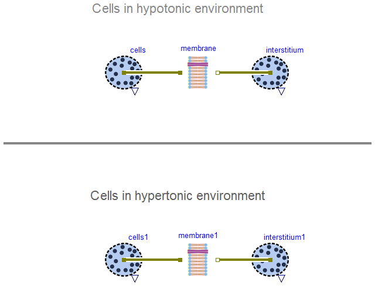
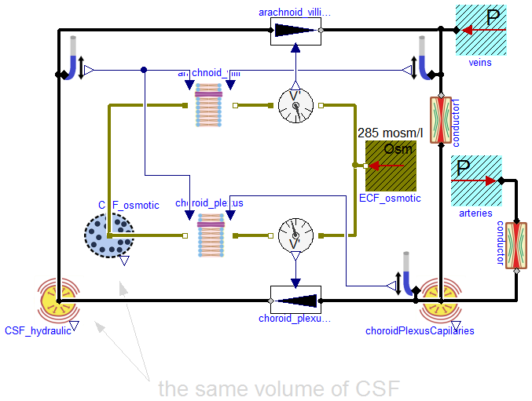

Examples that demonstrate usage of the Osmotic flow components
Information
Extends from Modelica.Icons.ExamplesPackage (Icon for packages containing runnable examples).
Package Content

Information
Extends from Modelica.Icons.Example (Icon for runnable examples).
Revisions
2013
Marek Matejak, Charles University, Prague, Czech Republic
Modelica definition

Information
Parameters are only manually estimated to reach steady state at 150ml CSF with CSF production and rebsorbtion 550ml/day and osmolarity 285 mosm/l.
[1] Dee Unglaub Silverthorn: Human Physiology
The cerebrospinal fluid (CSF) circulation: blood capilaries -> choriod plexus of third and fourth ventricle -> arachnoid villi -> blood in venous sinus.
[2] Hochwald, G. M., Wald, A., DiMattio, J., & Malhan, C. (1974). The effects of serum osmolarity on cerebrospinal fluid volume flow. Life sciences, 15(7), 1309-1316.
The effects of changes in serum osmolarity on cerebrospinal fluid (CSF) formation were studied in cats. CSF production rates were measured by ventriculocisternal perfusion both before and after intravenous infusion of glucose solutions.
Infusion of glucose, hyperosmolar with respect to serum, increased serum osmolarity and caused a decrease in CSF formation rate; conversely, infusion of hypoosmolar solutions lowered serum osmolarity and increased CSF formation. CSF production and serum osmolarity were found to be linearly related. A 1% serum osmolarity change resulted in a 6.7% change in CSF formation. CSF formation increased by 130% with a serum osmolarity of 265 m0sm/1 and was undetectable with serum of 380 m0sm/1.
[3] https://en.wikipedia.org/wiki/Cerebrospinal_fluid
The brain produces roughly 500 mL of cerebrospinal fluid per day. This fluid is constantly reabsorbed, so that only 100-160 mL is present at any one time. Ependymal cells of the choroid plexus produce more than two thirds of CSF. The choroid plexus is a venous plexus contained within the four ventricles of the brain, hollow structures inside the brain filled with CSF. The remainder of the CSF is produced by the surfaces of the ventricles and by the lining surrounding the subarachnoid space.
Ependymal cells actively secrete sodium into the lateral ventricles. This creates osmotic pressure and draws water into the CSF space. Chloride, with a negative charge, maintains electroneutrality and moves with the positively-charged sodium. As a result, CSF contains a higher concentration of sodium and chloride than blood plasma, but less potassium, calcium and glucose and protein.
Extends from Modelica.Icons.Example (Icon for runnable examples).
Revisions
2013
Marek Matejak, Charles University, Prague, Czech Republic
Modelica definition
model CerebrospinalFluid
extends Modelica.Icons.Example;
Physiolibrary.Osmotic.Components.OsmoticCell CSF_osmotic(volume_start(
displayUnit="ml") = 0.00015, ImpermeableSolutes={(0.286*0.15)})
"cerebro-spinal fluid";
Physiolibrary.Osmotic.Components.Membrane choroid_plexus(
useHydraulicPressureInputs=true, cond(displayUnit="ml/(mmHg.day)") = 1.9966916949595e-12)
"choroid plexus";
Physiolibrary.Hydraulic.Components.ElasticVessel CSF_hydraulic(
volume_start=0.00015,
ZeroPressureVolume=0.000145,
Compliance=2.250184727537e-09)
"cerebro-spinal fluid";
Physiolibrary.Hydraulic.Components.Pump choroid_plexus_hydraulic(
useSolutionFlowInput=true);
Physiolibrary.Osmotic.Sensors.FlowMeasure flowMeasure;
Physiolibrary.Hydraulic.Sensors.PressureMeasure pressureMeasure;
Physiolibrary.Osmotic.Sources.UnlimitedSolution ECF_osmotic(Osm=285)
"extracellular (extracerebrospinal) fluid osmolarity";
Physiolibrary.Hydraulic.Sources.UnlimitedVolume veins(P=0);
Physiolibrary.Osmotic.Components.Membrane arachnoid_villi(
useHydraulicPressureInputs=true, cond(displayUnit="ml/(mmHg.day)") = 1.1285648710641e-11)
"choroid plexus";
Physiolibrary.Hydraulic.Components.Pump arachnoid_villi_hydraulic(
useSolutionFlowInput=true);
Physiolibrary.Osmotic.Sensors.FlowMeasure flowMeasure1;
Physiolibrary.Hydraulic.Sources.UnlimitedVolume arteries(P=12665.626804425);
Physiolibrary.Hydraulic.Components.Conductor conductor(Conductance(
displayUnit="ml/(mmHg.min)") = 3.7503078792283e-11);
Physiolibrary.Hydraulic.Components.ElasticVessel choroidPlexusCapilaries(
volume_start=1.4e-05, Compliance=3.7503078792283e-09);
Physiolibrary.Hydraulic.Components.Conductor conductor1(Conductance=8.750718384866e-11);
Physiolibrary.Hydraulic.Sensors.PressureMeasure pressureMeasure1;
Physiolibrary.Hydraulic.Sensors.PressureMeasure pressureMeasure2;
equation
connect(CSF_hydraulic.q_in, pressureMeasure.q_in);
connect(CSF_hydraulic.q_in, choroid_plexus_hydraulic.q_out);
connect(flowMeasure.q_in, ECF_osmotic.port);
connect(CSF_osmotic.q_in[1], arachnoid_villi.q_in);
connect(CSF_hydraulic.q_in, arachnoid_villi_hydraulic.q_in);
connect(arachnoid_villi_hydraulic.q_out, veins.y);
connect(arachnoid_villi.q_out, flowMeasure1.q_in);
connect(flowMeasure1.q_out, ECF_osmotic.port);
connect(conductor.q_out, choroidPlexusCapilaries.q_in);
connect(choroidPlexusCapilaries.q_in, conductor1.q_in);
connect(veins.y, conductor1.q_out);
connect(arteries.y, conductor.q_in);
connect(choroid_plexus_hydraulic.q_in, choroidPlexusCapilaries.q_in);
connect(pressureMeasure1.q_in, veins.y);
connect(choroidPlexusCapilaries.q_in, pressureMeasure2.q_in);
connect(CSF_osmotic.q_in[1], choroid_plexus.q_out);
connect(choroid_plexus.q_in, flowMeasure.q_out);
connect(pressureMeasure2.pressure, choroid_plexus.hydraulicPressureIn);
connect(pressureMeasure1.pressure, arachnoid_villi.hydraulicPressureOut);
connect(pressureMeasure.pressure, arachnoid_villi.hydraulicPressureIn);
connect(pressureMeasure.pressure, choroid_plexus.hydraulicPressureOut);
connect(flowMeasure1.volumeFlowRate, arachnoid_villi_hydraulic.solutionFlow);
connect(flowMeasure.volumeFlowRate, choroid_plexus_hydraulic.solutionFlow);
end CerebrospinalFluid;
Automatically generated Sun Dec 07 18:23:52 2014.